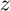

Derive Distributions for Risky + Safe Asets + Interpolated Distribution (Loop)
back to Fan's Dynamic Assets Repository Table of Content.
Contents
- FF_IWKZ_DS finds the stationary asset distributions
- Default
- Parse Parameters
- Start Profiler and Timer
- A. Get Size of Endogenous and Exogenous State
- B. f({a,k},z): Initialize Output Matrixes
- C. f({a,k},z): Initialize Convergence Conditions
- D. f({a,k},z): Derive Stationary Distribution
- f({a,k},z): Iterate over Probability mass for Discrete Random Variable
- f({a,k},z): Check Tolerance and Continuation
- End Time and Profiler
- f(y), f(c), f(a), f(k): Generate Key Distributional Statistics for Each outcome
function [result_map] = ff_iwkz_ds(varargin)
FF_IWKZ_DS finds the stationary asset distributions
Building on the Two Assets Two-Step Interpolated Dynamic Programming Problem ff_iwkz_vf_vecsv, here we solve for the asset distribution. This version of the program uses loops.
This is the two-stage with interpolation version of ff_akz_ds. See that file, as well as ff_az_ds for additional descriptions and comparisons. These two functions are different. Specifically, the code here works when we are looking for the distribution of f(a,z), where a'(a,z,z'), meaning that the a next period is determined by choices last period and some z last period, but also z' this period. a here specifically cash-on-hand. This contrasts with ff_az_ds, which works for a'(a,z), a' can not be a function of z'.
@example
% Get Default Parameters
it_param_set = 6;
[param_map, support_map] = ffs_az_set_default_param(it_param_set);
% Change Keys in param_map
param_map('it_w_n') = 750;
param_map('it_ak_n') = param_map('it_w_n');
param_map('it_z_n') = 11;
param_map('fl_a_max') = 100;
param_map('fl_w') = 1.3;
% Change Keys support_map
support_map('bl_display') = false;
support_map('bl_post') = true;
support_map('bl_display_final') = false;
% Call Program with external parameters that override defaults
ff_iwkz_ds(param_map, support_map);@include
@seealso
- derive distribution f(y'(y,z)) one asset loop: ff_az_ds
- derive distribution f(y'({x,y},z)) two assets loop: ff_akz_ds
- derive distribution f(y'({x,y},z, z')) two assets loop: ff_iwkz_ds
- derive distribution f(y'({y},z)) or f(y'({x,y},z)) vectorized: ff_az_ds_vec
- derive distribution f(y'({y},z, z')) or f(y'({x,y},z, z')) vectorized: ff_iwkz_ds_vec
- derive distribution f(y'({y},z)) or f(y'({x,y},z)) semi-analytical: ff_az_ds_vecsv
- derive distribution f(y'({y},z, z')) or f(y'({x,y},z, z')) semi-analytical: ff_iwkz_ds_vecsv
Default
Program can be externally invoked with az, abz or various other programs. By default, program invokes using az model programs:
- it_subset = 5 is basic invoke quick test
- it_subset = 6 is invoke full test
- it_subset = 7 is profiling invoke
- it_subset = 8 is matlab publish
- it_subset = 9 is invoke operational (only final stats) and coh graph
params_len = length(varargin); bl_input_override = 0; if (params_len == 6) bl_input_override = varargin{6}; end if (bl_input_override) % if invoked from outside override fully [param_map, support_map, armt_map, func_map, result_map, ~] = varargin{:}; else % default invoke close all; it_param_set = 8; st_akz_or_iwkz = 'iwkz'; bl_input_override = true; % 1. Generate Parameters [param_map, support_map] = ffs_akz_set_default_param(it_param_set); % Note: param_map and support_map can be adjusted here or outside to override defaults % param_map('it_w_n') = 50; % param_map('it_z_n') = 15; % 2. Generate function and grids [armt_map, func_map] = ffs_akz_get_funcgrid(param_map, support_map, bl_input_override); % 1 for override % 3. Solve value and policy function using ff_iwkz_vf_vecsv if (strcmp(st_akz_or_iwkz, 'iwkz')) [result_map] = ff_iwkz_vf_vecsv(param_map, support_map, armt_map, func_map); end end
Parse Parameters
% append function name st_func_name = 'ff_iwkz_ds'; support_map('st_profile_name_main') = [st_func_name support_map('st_profile_name_main')]; support_map('st_mat_name_main') = [st_func_name support_map('st_mat_name_main')]; support_map('st_img_name_main') = [st_func_name support_map('st_img_name_main')]; % result_map % ar_st_pol_names is from section _Process Optimal Choices_ in the value % function code. params_group = values(result_map, {'cl_mt_pol_a', 'cl_mt_pol_k'}); [cl_mt_pol_a, cl_mt_pol_k] = params_group{:}; [mt_pol_a, mt_pol_k] = deal(cl_mt_pol_a{1}, cl_mt_pol_k{1}); % func_map params_group = values(func_map, {'f_coh'}); [f_coh] = params_group{:}; % armt_map params_group = values(armt_map, {'mt_z_trans', 'ar_z'}); [mt_z_trans, ar_z] = params_group{:}; params_group = values(armt_map, {'ar_interp_coh_grid'}); [ar_interp_coh_grid] = params_group{:}; % param_map params_group = values(param_map, {'it_z_n', 'it_maxiter_dist', 'fl_tol_dist'}); [it_z_n, it_maxiter_dist, fl_tol_dist] = params_group{:}; % support_map params_group = values(support_map, {'bl_profile_dist', 'st_profile_path', ... 'st_profile_prefix', 'st_profile_name_main', 'st_profile_suffix',... 'bl_time', 'bl_display_dist', 'it_display_every'}); [bl_profile_dist, st_profile_path, ... st_profile_prefix, st_profile_name_main, st_profile_suffix, ... bl_time, bl_display_dist, it_display_every] = params_group{:};
Start Profiler and Timer
% Start Profile if (bl_profile_dist) close all; profile off; profile on; end % Start Timer if (bl_time) tic; end
A. Get Size of Endogenous and Exogenous State
it_endostates_n = length(ar_interp_coh_grid); it_exostates_n = length(ar_z);
B. f({a,k},z): Initialize Output Matrixes
Initialize the distribution to be uniform
mt_dist_akz_init = ones(it_endostates_n,it_exostates_n)/it_endostates_n/it_exostates_n; mt_dist_akz_cur = mt_dist_akz_init; mt_dist_akz_zeros = zeros(it_endostates_n,it_exostates_n);
C. f({a,k},z): Initialize Convergence Conditions
bl_histiter_continue = true; it_iter = 0; ar_dist_diff_norm = zeros([it_maxiter_dist, 1]); mt_dist_perc_change = zeros([it_maxiter_dist, it_z_n]);
D. f({a,k},z): Derive Stationary Distribution
Iterate over the discrete joint random variable variables ({a,k},z)
We are looking for the distribution of: where and , meaning that and are determined by and and , but not .
while (bl_histiter_continue)
it_iter = it_iter + 1;
f({a,k},z): Iterate over Probability mass for Discrete Random Variable
compared to ff_akz_vf, we basically have the same set of loops. There, there were four loops, here there are three loops. We eliminated the loop over next period choices, because here we already know optimal choices
% initialize empty mt_dist_akz = mt_dist_akz_zeros; % loop 1: over exogenous states for it_z_i = 1:it_exostates_n % loop 2: over endogenous states for it_coh_grid_j = 1:it_endostates_n % f(a'|a) = 1 for only one a' % in dynamic programming problem, had a loop over choices, now % already have optimal choices, do not need to loop fl_aprime = mt_pol_a(it_coh_grid_j, it_z_i); fl_kprime = mt_pol_k(it_coh_grid_j, it_z_i); % loop 3: loop over future shocks % E_{coh,z}(f(coh'(a',k',z'),z'|coh,z)*f(coh,z)) for it_zp_q = 1:it_exostates_n % A. Get the index that the index for coh' based on coh,z,z' % current shock fl_zprime = ar_z(it_zp_q); % cash-on-hand next period which is a function also of z' fl_coh_prime = f_coh(fl_zprime, fl_aprime, fl_kprime); % next period index [~, it_coh_prime_on_grid_idx] = min(abs(fl_coh_prime - ar_interp_coh_grid)); % B. prob of going to coh'(coh,z,z') % current probablity at (a,z) fl_cur_zak_prob = mt_dist_akz_cur(it_coh_grid_j, it_z_i); % f(z'|z) transition fl_ztoz_trans = mt_z_trans(it_z_i, it_zp_q); % f(a',z'|a,z)*f({a,k},z) fl_zfromzak = fl_cur_zak_prob*fl_ztoz_trans; % cumulating mt_dist_akz(it_coh_prime_on_grid_idx, it_zp_q) = ... mt_dist_akz(it_coh_prime_on_grid_idx, it_zp_q) + fl_zfromzak; end end end
f({a,k},z): Check Tolerance and Continuation
% Difference across iterations ar_dist_diff_norm(it_iter) = norm(mt_dist_akz - mt_dist_akz_cur); mt_dist_perc_change(it_iter, :) = sum((mt_dist_akz ~= mt_dist_akz))/it_endostates_n; % Update mt_dist_akz_cur = mt_dist_akz; % Print Iteration Results if (bl_display_dist && (rem(it_iter, it_display_every)==0)) fprintf('Dist it_iter:%d, fl_dist_diff:%d\n', it_iter, ar_dist_diff_norm(it_iter)); tb_hist_iter = array2table([sum(mt_dist_akz_cur,1); std(mt_dist_akz_cur,1); ... mt_dist_akz_cur(1,:); mt_dist_akz_cur(it_endostates_n,:)]); tb_hist_iter.Properties.VariableNames = strcat('z', string((1:size(mt_dist_akz,2)))); tb_hist_iter.Properties.RowNames = {'mdist','sddist', 'Ldist', 'Hdist'}; disp('mdist = sum(mt_dist_akz_cur,1) = sum_{a,k}(p({a,k})|z)') disp('sddist = std(mt_pol_ak_cur,1) = std_{a,k}(p({a,k})|z)') disp('Ldist = mt_dist_akz_cur(1,:) = p(min({a,k})|z)') disp('Hdist = mt_dist_akz_cur(it_a_n,:) = p(max({a,k})|z)') disp(tb_hist_iter); end % Continuation Conditions: if (it_iter == (it_maxiter_dist + 1)) bl_histiter_continue = false; elseif ((it_iter == it_maxiter_dist) || ... (ar_dist_diff_norm(it_iter) < fl_tol_dist)) it_iter_last = it_iter; it_iter = it_maxiter_dist; end
end
End Time and Profiler
% End Timer if (bl_time) toc; end % End Profile if (bl_profile_dist) profile off profile viewer st_file_name = [st_profile_prefix st_profile_name_main st_profile_suffix]; profsave(profile('info'), strcat(st_profile_path, st_file_name)); end
f(y), f(c), f(a), f(k): Generate Key Distributional Statistics for Each outcome
Having derived f({a,k},z) the probability mass function of the joint discrete random variables, we now obtain distributional statistics. Note that we know f({a,k},z), and we also know relevant policy functions a'(a,z), c(a,z), or other policy functions. We can simulate any choices that are a function of the random variables (a,z), using f({a,k},z). We call function ff_az_ds_post_stats which uses fft_disc_rand_var_stats and fft_disc_rand_var_mass2outcomes to compute various statistics of interest.
bl_input_override = true; result_map = ff_az_ds_post_stats(support_map, result_map, mt_dist_akz, bl_input_override);
----------------------------------------
xxxxxxxxxxxxxxxxxxxxxxxxxxxxxxxxxxxxxxxx
Summary Statistics for: cl_mt_pol_coh
xxxxxxxxxxxxxxxxxxxxxxxxxxxxxxxxxxxxxxxx
----------------------------------------
fl_choice_mean
6.6350
fl_choice_sd
3.1472
fl_choice_coefofvar
0.4743
fl_choice_prob_zero
0
fl_choice_prob_below_zero
0
fl_choice_prob_above_zero
1.0000
fl_choice_prob_max
0
tb_prob_drv
percentiles cl_mt_pol_cohPercentileValues fracOfSumHeldBelowThisPercentile
___________ _____________________________ ________________________________
0.1 0.44365 0.00070632
1 0.44365 0.00070632
5 3.2502 0.022288
10 3.7514 0.045512
15 4.1524 0.086704
20 4.3528 0.11199
25 4.6535 0.16932
35 5.1547 0.21498
50 5.7561 0.34178
65 6.8587 0.50581
75 7.6606 0.59072
80 8.1618 0.65133
85 9.2644 0.72317
90 10.668 0.79505
95 13.174 0.88519
99 17.985 0.96997
99.9 24.701 0.99642
----------------------------------------
xxxxxxxxxxxxxxxxxxxxxxxxxxxxxxxxxxxxxxxx
Summary Statistics for: cl_mt_pol_a
xxxxxxxxxxxxxxxxxxxxxxxxxxxxxxxxxxxxxxxx
----------------------------------------
fl_choice_mean
0.3058
fl_choice_sd
1.1327
fl_choice_coefofvar
3.7047
fl_choice_prob_zero
0.8828
fl_choice_prob_below_zero
0
fl_choice_prob_above_zero
0.1172
fl_choice_prob_max
0
tb_prob_drv
percentiles cl_mt_pol_aPercentileValues fracOfSumHeldBelowThisPercentile
___________ ___________________________ ________________________________
0.1 0 0
1 0 0
5 0 0
10 0 0
15 0 0
20 0 0
25 0 0
35 0 0
50 0 0
65 0 0
75 0 0
80 0 0
85 0 0
90 1.0204 0.11504
95 2.0408 0.33054
99 6.1224 0.75805
99.9 11.224 0.9602
----------------------------------------
xxxxxxxxxxxxxxxxxxxxxxxxxxxxxxxxxxxxxxxx
Summary Statistics for: cl_mt_pol_k
xxxxxxxxxxxxxxxxxxxxxxxxxxxxxxxxxxxxxxxx
----------------------------------------
fl_choice_mean
4.5281
fl_choice_sd
2.1664
fl_choice_coefofvar
0.4784
fl_choice_prob_zero
0.0106
fl_choice_prob_below_zero
0
fl_choice_prob_above_zero
0.9894
fl_choice_prob_max
9.0646e-08
tb_prob_drv
percentiles cl_mt_pol_kPercentileValues fracOfSumHeldBelowThisPercentile
___________ ___________________________ ________________________________
0.1 0 0
1 0 0
5 2.0408 0.045238
10 2.0408 0.045238
15 3.0612 0.21194
20 3.0612 0.21194
25 3.0612 0.21194
35 3.0612 0.21194
50 4.0816 0.45126
65 5.102 0.64408
75 5.102 0.64408
80 6.1224 0.75752
85 6.1224 0.75752
90 7.1429 0.81493
95 9.1837 0.91764
99 12.245 0.97389
99.9 16.327 0.99618
----------------------------------------
xxxxxxxxxxxxxxxxxxxxxxxxxxxxxxxxxxxxxxxx
Summary Statistics for: cl_mt_pol_c
xxxxxxxxxxxxxxxxxxxxxxxxxxxxxxxxxxxxxxxx
----------------------------------------
fl_choice_mean
1.8012
fl_choice_sd
0.5588
fl_choice_coefofvar
0.3103
fl_choice_prob_zero
0
fl_choice_prob_below_zero
0
fl_choice_prob_above_zero
1.0000
fl_choice_prob_max
0
tb_prob_drv
percentiles cl_mt_pol_cPercentileValues fracOfSumHeldBelowThisPercentile
___________ ___________________________ ________________________________
0.1 0.44365 0.0026018
1 0.44365 0.0026018
5 1.009 0.026023
10 1.1733 0.065093
15 1.2736 0.098025
20 1.2916 0.12565
25 1.3918 0.18942
35 1.5382 0.2474
50 1.7567 0.39882
65 1.9571 0.5379
75 2.1757 0.68582
80 2.2579 0.72548
85 2.4222 0.78094
90 2.5405 0.84178
95 2.8051 0.91426
99 3.2982 0.98041
99.9 3.9195 0.99768
xxx All Variables PERCENTILES AND STATS xxx
tb_outcomes_meansdperc: mean, sd, percentiles
mean sd coefofvar min max pYis0 pYls0 pYgr0 pYisMINY pYisMAXY p0_1 p1 p5 p10 p15 p20 p25 p35 p50 p65 p75 p80 p85 p90 p95 p99 p99_9
_______ _______ _________ ________ ______ ________ _____ _______ ________ __________ _______ _______ ______ ______ ______ ______ ______ ______ ______ ______ ______ ______ ______ ______ ______ ______ ______
cl_mt_pol_coh 6.635 3.1472 0.47433 0.44365 57.277 0 0 1 0.010563 0 0.44365 0.44365 3.2502 3.7514 4.1524 4.3528 4.6535 5.1547 5.7561 6.8587 7.6606 8.1618 9.2644 10.668 13.174 17.985 24.701
cl_mt_pol_a 0.30576 1.1327 3.7047 0 47.959 0.88283 0 0.11717 0.88283 0 0 0 0 0 0 0 0 0 0 0 0 0 0 1.0204 2.0408 6.1224 11.224
cl_mt_pol_k 4.5281 2.1664 0.47844 0 22.449 0.010563 0 0.98944 0.010563 9.0646e-08 0 0 2.0408 2.0408 3.0612 3.0612 3.0612 3.0612 4.0816 5.102 5.102 6.1224 6.1224 7.1429 9.1837 12.245 16.327
cl_mt_pol_c 1.8012 0.55884 0.31026 0.024653 7.2772 0 0 1 0 0 0.44365 0.44365 1.009 1.1733 1.2736 1.2916 1.3918 1.5382 1.7567 1.9571 2.1757 2.2579 2.4222 2.5405 2.8051 3.2982 3.9195
xxx All Variables Fraction of Y Held up to Percentile xxx
tb_outcomes_fracheld: fraction of asset/income/etc held by hh up to this percentile
fracByP0_1 fracByP1 fracByP5 fracByP10 fracByP15 fracByP20 fracByP25 fracByP35 fracByP50 fracByP65 fracByP75 fracByP80 fracByP85 fracByP90 fracByP95 fracByP99 fracByP99_9
__________ __________ ________ _________ _________ _________ _________ _________ _________ _________ _________ _________ _________ _________ _________ _________ ___________
cl_mt_pol_coh 0.00070632 0.00070632 0.022288 0.045512 0.086704 0.11199 0.16932 0.21498 0.34178 0.50581 0.59072 0.65133 0.72317 0.79505 0.88519 0.96997 0.99642
cl_mt_pol_a 0 0 0 0 0 0 0 0 0 0 0 0 0 0.11504 0.33054 0.75805 0.9602
cl_mt_pol_k 0 0 0.045238 0.045238 0.21194 0.21194 0.21194 0.21194 0.45126 0.64408 0.64408 0.75752 0.75752 0.81493 0.91764 0.97389 0.99618
cl_mt_pol_c 0.0026018 0.0026018 0.026023 0.065093 0.098025 0.12565 0.18942 0.2474 0.39882 0.5379 0.68582 0.72548 0.78094 0.84178 0.91426 0.98041 0.99768
end
ans =
Map with properties:
Count: 14
KeyType: char
ValueType: any